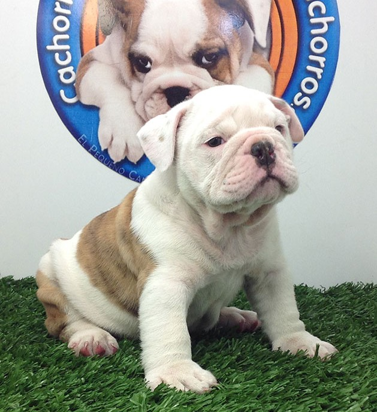
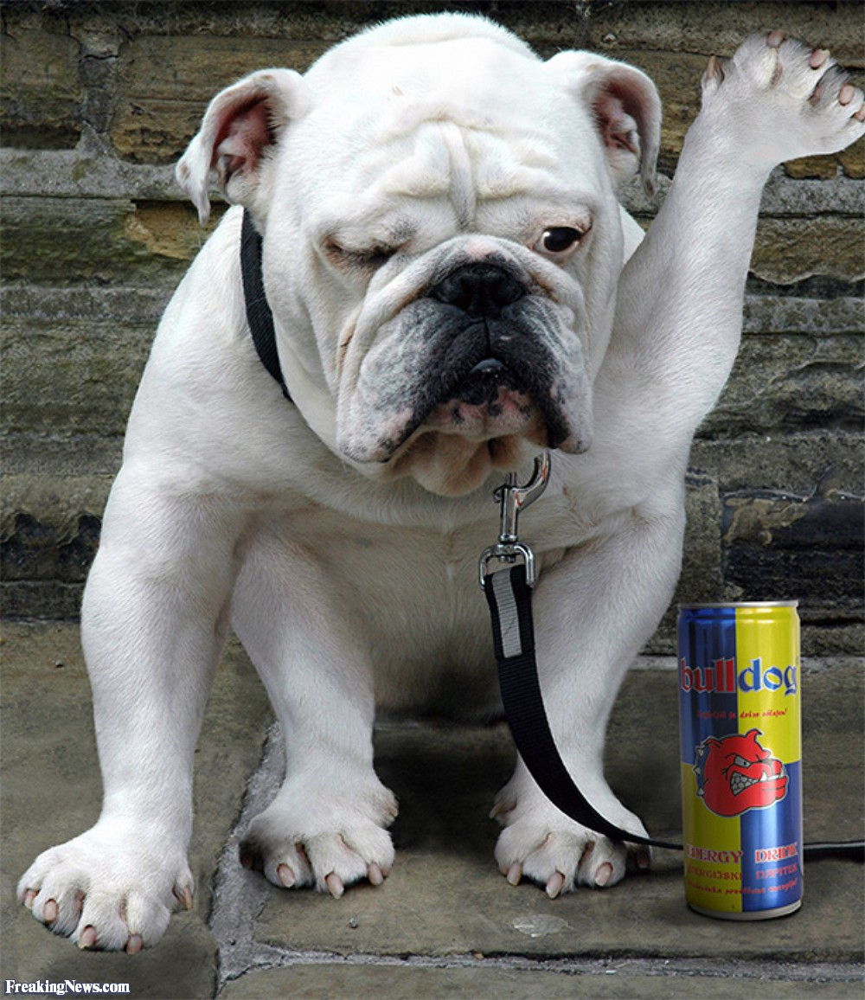
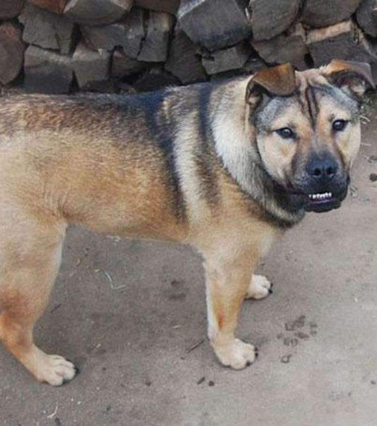
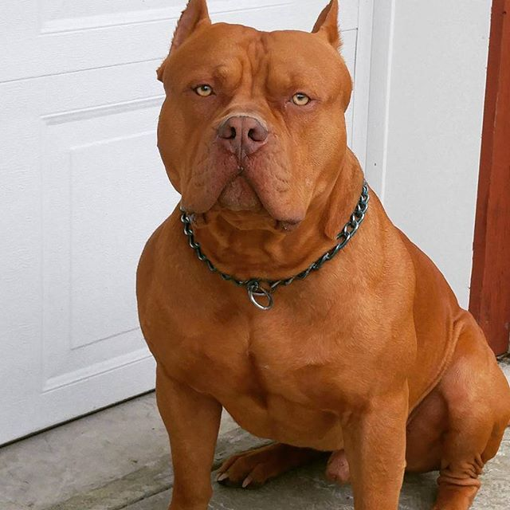

BIENVENIDOS A MI BLOG DE ANIMALES DOMESTICOS
el bulldog ingles es un perro balerozo y conbativo al qu poca veces oiremos lloriquiar
Lo Último de nuestro blog
combatiente
tierno
LOS ANIMALES DOMESTICOS MAS LINDOS

BELLO

IMITADOR

PASTOR ALEMA
